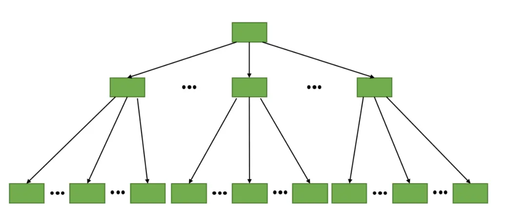

浅谈MySQL的索引
1. B+树
关系型数据库的表类似 Excel，但与表格不同的时，它还提供了索引、事务等额外的机制，其中索引是数据库的一个关键点。
索引是为了提高查询速度而出现的，查询主要有等值查询和范围查询。直观的一个想法使用哈希表实现索引，哈希表可以实现 O(1) 查找复杂度，但是对于范围查询，哈希表需要遍历所有数据。
另一个想法是使用有序数组，通过二分查找的方式，等值查询和范围查询都能在 O(logn) 复杂度下完成。但是一个问题也紧接而来，当在表中插入数据时，有序数组需要进行 O(n) 复杂度的元素移动，显然不适合实现索引。
于是我们想到另一个综合了查询和修改功能的数据结构，二叉搜索树，它可以在 O(logn) 复杂度下完成查询和修改操作，看起来已经十分完美。但这仍有一个问题，二叉搜索树在内存这表现优异，那在磁盘中呢？磁盘的 IO 次数直接由树的高度决定，而表中存有几万甚至几十万的数据是一件常事，每次查询都需要经过多次 IO，依旧十分耗时。
说了这么多，终于引出我们的主角，B+ 树。B+ 树可以看成一个多叉搜索树，其中每个节点都是有序的，并且只有叶节点存储数据，非叶节点进行不存储，非叶节点能够存放大量索引，大幅度降低树的高度。除此之外，叶节点连接形成有序链表，可以实现范围查询。

2. MySQL中的索引
2.1 索引类型
底层数据结构
根据底层数据结构实现，MySQL 提供了 4 种索引类型：
- BTREE 索引：最常见的索引类型，大部分引擎都支持该索引
- HASH 索引：查找速度快，但只有 Memory 引擎支持，无法用于排序
- Full-text 索引：全文索引，是 MyISAM 的一个特殊索引类型，主要用于大本文搜索， InnoDB 在 MySQL 5.6 后支持
- R-tree 索引：又称空间索引，主要用于地理空间数据，使用较少
唯一索引
索引根据值能否重复可以分为：
非唯一索引：索引的值可以重复
唯一索引：索引的值必须唯一，但可以存在多个 null，可以通过以下方式创建。
1
CREATE UNIQUE INDEX key_name ON table_name(col_name);
联合索引
索引根据包含列的数量又可分为：
- 单值索引：一个索引只包含一个列
- 联合索引：将多个列联合，并根据列出现的顺序排序。例如索引 (a，b，c)，会先 a 进行排序，a 相同的情况再根据 b 排序，最后根据 c 排序。
2.2 聚簇索引
2.2.1 介绍
聚簇索引是 InnoDB 的一个特点，聚簇索引会将数据存放在叶子节点，并且一个表只能有一个聚簇索引，通常为主键。其他的索引称为二级索引，二级索引会在叶节点存储自身和主键。
通过主键查询数据时，访问到索引叶节点即可获取数据；而通过二级索引查询数据，访问到索引叶节点只能拿到主键，需要利用主键和聚簇索引再进行查找，这一过程称为回表。
用户可以自定义一个聚簇索引，未指定的话 InnoDB 会将主键列为聚簇索引，不存在主键则定义一个隐式自增主键 row_id。
2.2.2 聚簇索引的优缺点
优点：
- 叶节点直接存储数据，磁盘 I/O 少
缺点：
- 更新和非顺序插入数据可能导致页分裂，效率低
- 降低了二级索引的查询效率
3. 使用索引
3.1 索引失效
下列场景将导致索引失效：
最左匹配原则：使用联合索引查询，依次根据索引的列顺序查询，例如：
1
2
3
4
5
6
7
8# 联合索引为 (name, email, address)
# 索引生效
select * from user where name = 'bzzb' and email = 'xx@qq.com'
# 只用了name索引
select * from user where name = 'bzzb' and address = 'xx'
# 索引失效
select * from user where email = 'xx@qq.com' and address = 'xx'OR 连接的所有字段没有都含有索引，例如：
1
2
3
4# 索引为 (name, email, address)
# nickname不含索引, 索引失效
select * from user where name = 'bzzb' or nickname = 'zhibin'模糊匹配 LIKE 中的字符串以 % 开始，因为会匹配所有字符，将导致索引失效；
使用不等于（!= 和 <>）只能全表扫描，无法使用索引；
存在字符串隐式转换将导致索引失效，例如：
1
2
3# 索引为 (name, email, address)
# 需要将2000转换为字符串"2000"，索引失效
select * from user where name = 2000在索引在的列上进行运算，将导致索引失效。
1
2
3
4# 索引为 (name, email, address)
# 使用了字符串运算，索引失效
select * from user where left(name, 2) = "bz"
即使不符合上述的情况，MySQL 的优化器也会根据情况不使用索引，而是进行全表扫描。查询语句是否使用到索引可以使用 explain 查看。
3.2 索引使用建议
除了避免索引失效，还有以下索引使用建议：
主键设置为自增类型，提高数据插入的效率；
对于常用的查询，考虑使用覆盖查询减少回表；
- 索引列的类型尽量小，类型越小，占用的存储空间更小，单页能放下索引的数目更高；
- 只为用于搜索、排序或分组的列创建索引，引入索引虽然提高了查询性能，但也影响数据插入和删除的性能；
- 取值较少的列不建议单独建立索引，例如性别，虽然存在根据性别查询的场景，但 MySQL 优化器大概率会进行全表扫描。